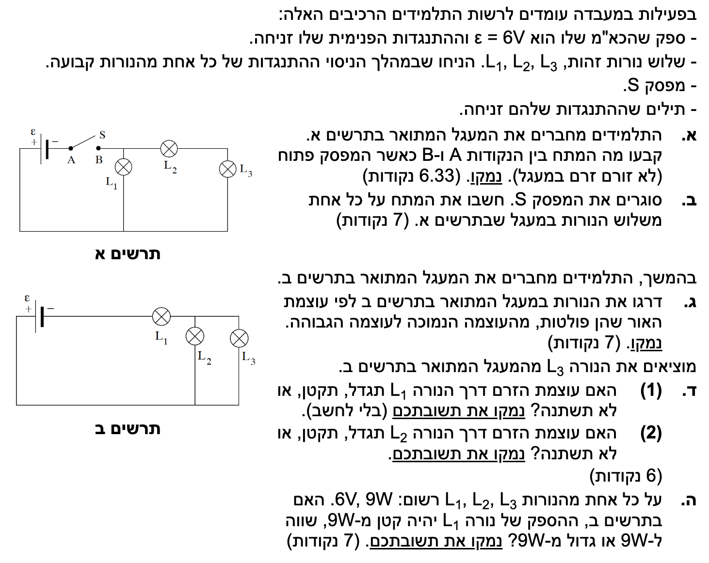
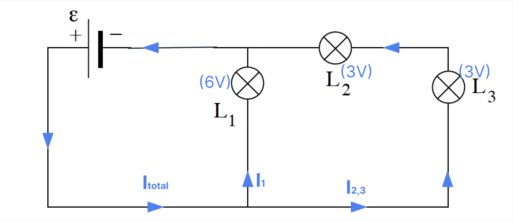
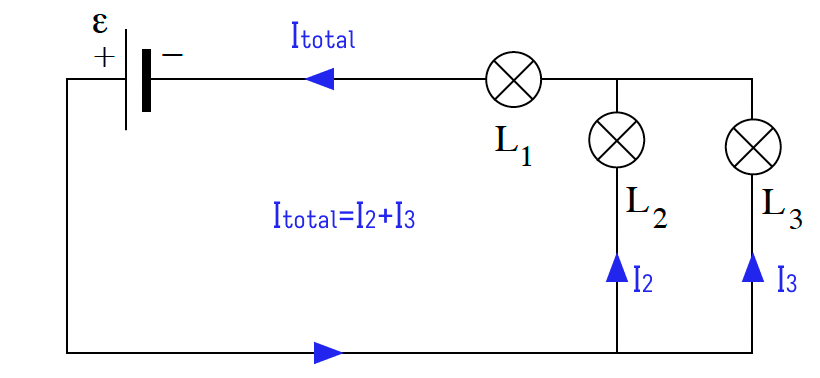

שלום תלמידים יקרים! לפנינו שאלה קלאסית וחשובה בנושא מעגלי זרם ישר. השאלה בוחנת את ההבנה שלנו לגבי חיבור נגדים (נורות) בטור ובמקביל, חלוקת מתחים וזרמים, וההשפעה של שינויים במעגל על העוצמה (הספק). נפתור אותה יחד, שלב אחר שלב, תוך היצמדות לעקרונות הפיזיקליים ולנוסחאות שבדף. בואו נתחיל!

את גודל המתח בין הנקודות A ו-B כאשר המפסק פתוח (כלומר אין זרם במעגל).
כאשר המפסק פתוח, המעגל מנותק ולכן לא זורם זרם מהספק: \(I = 0A\). נקודה A מחוברת ישירות להדק החיובי של הספק. נקודה B מחוברת דרך רשת הנורות להדק השלילי. מכיוון שהזרם אפס, מפל המתח על כל נורה הוא אפס (לפי חוק אוהם):
לכן, נקודה B נמצאת באותו פוטנציאל כמו ההדק השלילי של הספק. מתח ההדקים של הספק במצב של נתק הוא הכא"מ עצמו:
תשובה סופית: המתח בין הנקודות A ו-B כאשר המפסק פתוח הוא \(6.00V\).
לחשב את המתח על כל אחת משלוש הנורות (\(V_1, V_2, V_3\)).
היות ולספק אין התנגדות פנימית (\(r=0\)), מתח ההדקים שלו הוא בדיוק \(6V\). בחיבור במקביל, המתח על כל ענף שווה למתח המקור.

עבור ענף נורה \(L_1\): הענף מחובר ישירות במקביל לסוללה. לכן המתח עליו הוא בדיוק מתח המקור.
עבור הענף של נורות \(L_2\) ו-\(L_3\): גם ענף זה מחובר במקביל לסוללה, ולכן המתח הכולל עליו הוא \(6V\). היות ושתי הנורות מחוברות בטור זו לזו, על פי חוק לולאת המתחים של קירכהוף:
מאחר ונתון כי הנורות זהות, יש להן אותה התנגדות (\(R_2 = R_3 = R\)). מכיוון שהן בטור, זורם בהן אותו זרם (\(I_2 = I_3\)). לפי חוק אוהם (\(V=IR\)), גם מפל המתח עליהן זהה:
תשובה סופית: המתח על נורה \(L_1\) הוא \(6.00V\). המתח על נורה \(L_2\) הוא \(3.00V\). המתח על נורה \(L_3\) הוא \(3.00V\).
לדרג את שלוש הנורות לפי עוצמת האור שהן פולטות, מהעוצמה הגבוהה לנמוכה ביותר, ולנמק.
נפתח נוסחה נוחה יותר להספק על נגד (נורה) באמצעות שילוב שתי הנוסחאות: נציב את חוק אוהם \(V = IR\) אל תוך נוסחת ההספק ונקבל: \(P = (IR) \cdot I \Rightarrow \mathbf{P = I^2 R}\). מכיוון שכל הנורות בעלות אותה התנגדות \(R\), מספיק להשוות את הזרם דרכן כדי להשוות את עוצמת ההארה.
נסתכל על זרימת הזרם במעגל (תרשים ב'). הזרם הכולל יוצא מהסוללה ועובר כולו דרך נורה \(L_1\). לאחר מכן, הוא מגיע לצומת ומתפצל.

הלפי כלל הצומת לזרמים (חוק קירכהוף הראשון):
מכיוון שנורות \(L_2\) ו-\(L_3\) מחוברות במקביל אחת לשנייה ושתיהן בעלות אותה התנגדות בדיוק (\(R_2 = R_3 = R\)), הזרם יתפצל ביניהן בצורה שווה:
מכאן אנו למדים ש- \(I_1 > I_2\) וש- \(I_2 = I_3\). מאחר ועוצמת ההארה פרופורציונלית לריבוע הזרם (\(P=I^2R\)), נורה \(L_1\) תאיר בעוצמה הגבוהה ביותר, והנורות \(L_2, L_3\) יאירו בעוצמה נמוכה יותר ושווה זו לזו.
תשובה סופית: דירוג עוצמת ההארה מהגבוהה לנמוכה הוא: \(L_1 > L_2 = L_3\).
האם עוצמת הזרם דרך נורה \(L_1\) תגדל, תקטן או לא תשתנה? לנמק ללא חישוב.
לפני הוצאת \(L_3\), נורות \(L_2\) ו-\(L_3\) חוברו במקביל. ההתנגדות השקולה של שני נגדים זהים במקביל קטנה מהתנגדותו של כל נגד בנפרד (במקרה של שניים זהים היא \(R/2\)). לאחר שהוצאנו את \(L_3\), נותרנו בענף זה רק עם נורה \(L_2\) בעלת התנגדות \(R\).
מכיוון שהחלפנו חלק מהמעגל (החלק המקבילי) ברכיב בעל התנגדות גדולה יותר, ההתנגדות השקולה של המעגל כולו (\(R_{eq}\)) גדלה.
לפי חוק אוהם, כאשר מתח המקור קבוע וההתנגדות הכוללת של המעגל גדלה, הזרם הכולל הזורם במעגל קטן.
כיוון שנורה \(L_1\) מחוברת בטור למקור, כל הזרם של המעגל עובר דרכה (\(I_1 = I_{\text{tot}}\)). לכן, הזרם דרכה יקטן.
נבטא את התנגדות כל נורה ב-\(R\).
לפני השינוי: הנורות \(L_2\) ו-\(L_3\) מחוברות במקביל, וההתנגדות השקולה שלהן היא:
ההתנגדות השקולה הכוללת של המעגל היא סכום ההתנגדויות בטור:
נחשב את הזרם הכולל (הזרם דרך \(L_1\)) באמצעות חוק אוהם:
לאחר הוצאת \(L_3\): המעגל הופך למעגל טורי פשוט המכיל רק את \(L_1\) ו-\(L_2\) בטור. ההתנגדות השקולה החדשה היא:
הזרם החדש דרך \(L_1\) יהיה:
נשווה בין הזרמים:
רואים בבירור שהזרם דרך \(L_1\) קטן.
תשובה סופית: הזרם דרך נורה \(L_1\) יקטן.
האם עוצמת הזרם דרך נורה \(L_2\) תגדל, תקטן או לא תשתנה? לנמק.
על פי חוק לולאת המתחים של קירכהוף (שימור אנרגיה), סכום מפלי המתחים לאורך מסלול סגור שווה לכא"מ. במקרה שלנו (מכיוון ש-\(r=0\)): \( \varepsilon = V_1 + V_2 \). מתח המקור קבוע ושווה ל-\(6V\).
מסעיף ד(1) הסקנו שהזרם דרך נורה \(L_1\) (\(I_1\)) קטן. לפי חוק אוהם (\(V_1 = I_1 \cdot R\)), מכיוון שהתנגדותה קבועה והזרם דרכה קטן, מפל המתח על נורה \(L_1\) (\(V_1\)) קטן.
לפי משוואת המתחים של המעגל:
הכא"מ \(\varepsilon\) הוא גודל קבוע (6V). מכיוון ש-\(V_1\) קטן, הרי ש-\(V_2\) חייב לגדול כדי שהסכום יישאר שווה למתח המקור. מכיוון שהמתח על נורה \(L_2\) גדל, והתנגדותה קבועה, על פי חוק אוהם (\(I_2 = \frac{V_2}{R}\)), הזרם דרך \(L_2\) חייב לגדול.
נשתמש בחישובים והביטויים שפיתחנו בדרך החלופית בסעיף ד(1).
לפני השינוי: הזרם הכולל במעגל היה \(I_{\text{tot}_{\text{old}}} = \frac{2\varepsilon}{3R}\). מכיוון שהנורות \(L_2\) ו-\(L_3\) זהות ומחוברות במקביל, הזרם התפצל ביניהן באופן שווה לחלוטין:
לאחר הוצאת \(L_3\): המעגל החדש הוא מעגל טורי, ולכן הזרם דרך נורה \(L_2\) שווה בדיוק לזרם הכולל החדש שחישבנו:
נשווה בין שני הזרמים:
ניתן לראות באופן חד-משמעי כי הזרם שזורם דרך נורה \(L_2\) גדל.
תשובה סופית: הזרם דרך נורה \(L_2\) יגדל.
האם במעגל ב', ההספק הממשי שצורכת נורה \(L_1\) קטן, שווה או גדול מ- 9W? נמק.
על ידי הצבת הזרם בנוסחת ההספק נקבל: \( P = V \cdot \left(\frac{V}{R}\right) \Rightarrow \mathbf{P = \frac{V^2}{R}} \). נוסחה זו נוחה כי התנגדות הנורה \(R\) קבועה, ולכן ההספק תלוי ריבועית במתח שעליה.
על פי הערכים הנומינליים, כדי שההספק של נורה \(L_1\) יהיה \(9W\), מפל המתח בפועל על הנורה חייב להיות בדיוק \(6V\).
אולם, נתבונן בתרשים ב'. למקור המתח יש \(6V\). מתח זה מתחלק בין נורה \(L_1\) לבין המקביל של הנורות האחרות, לפי המשוואה:
מכיוון שלחלק המקבילי יש התנגדות מסוימת (שאינה אפס), בהכרח נופל עליו מתח כלשהו (\(V_{\text{parallel}} > 0\)). לכן, מפל המתח הנותר על נורה \(L_1\) חייב להיות קטן מ-\(6V\).
מאחר וההספק פרופורציונלי לריבוע המתח (\(P = \frac{V^2}{R}\)), והמתח בפועל קטן מהמתח הנומינלי הדרוש, הרי שההספק בפועל יהיה קטן מההספק הנומינלי של \(9W\).
נחשב במדויק את כל הערכים החשמליים במעגל המדובר.
שלב 1: מציאת התנגדותה של כל נורה (\(R\)) מתוך הערכים הנומינליים: לפי הנוסחה \(P = \frac{V^2}{R}\), נציב את הערכים הנומינליים הרשומים על הנורה:
לפיכך, ההתנגדות של כל נורה במעגל היא בדיוק \(4\Omega\).
שלב 2: מציאת ההתנגדות השקולה של המעגל כולו בתרשים ב': הנורות \(L_2\) ו-\(L_3\) מחוברות במקביל, והתנגדותן השקולה היא:
נורה \(L_1\) מחוברת בטור לשילוב זה, ולכן ההתנגדות השקולה הכוללת היא:
שלב 3: מציאת הזרם הכולל במעגל (שהוא גם הזרם העובר דרך \(L_1\)): נפעיל את חוק אוהם על המעגל כולו עם מתח מקור \(\varepsilon = 6V\):
שלב 4: חישוב ההספק הממשי המתפתח על נורה \(L_1\): נחשב את ההספק בעזרת הזרם וההתנגדות:
נשווה את ההספק בפועל להספק הנומינלי:
החישוב מראה בצורה כמותית ומובהקת כי ההספק הממשי שקטן משמעותית מהערך הנומינלי.
תשובה סופית: ההספק של נורה \(L_1\) בתרשים ב' יהיה קטן מ- 9W (והוא שווה ל- \(4.00W\)).